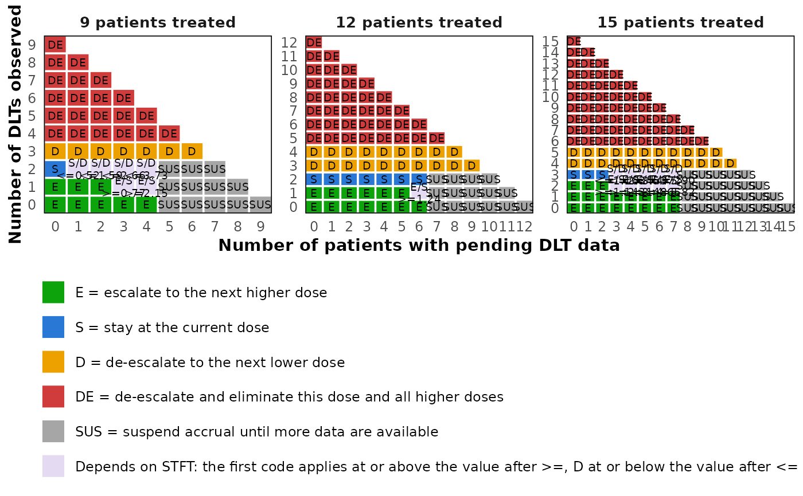
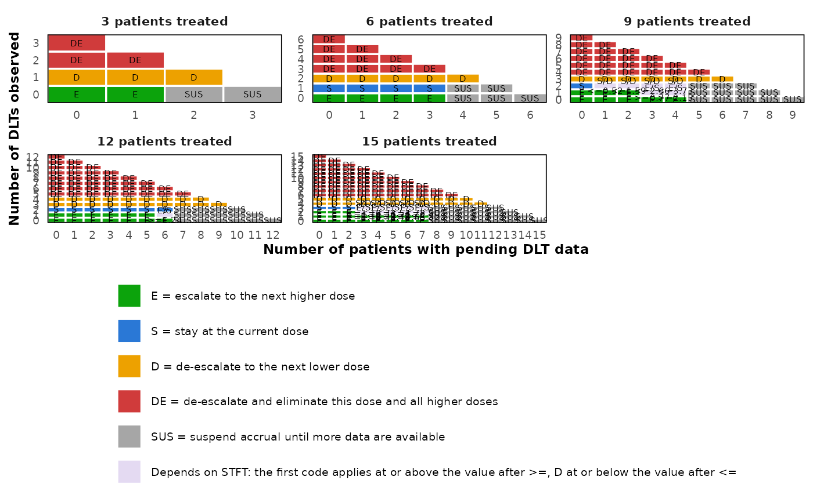

Plot a TITE-BOIN Decision Table
Source:R/plot.tite_boin_decision_table.R
plot.tite_boin_decision_table.RdDraw the decision table produced by tite_boin_decision_table
as one panel per number of patients treated. Within a panel, each cell is a
pair of pending patients and DLTs, colored by its decision and labeled with
the decision code and, where the decision depends on the follow-up of the
pending patients, the boundaries on the follow-up statistic.
Usage
# S3 method for class 'tite_boin_decision_table'
plot(
x,
n = NULL,
cohort_size = NULL,
text_size = 1,
colors = NULL,
digits = 2,
...
)Arguments
- x
An object of class
tite_boin_decision_table.- n
Integer vector or
NULL. Numbers of patients treated to draw, one panel each. Defaults to every number in the table.- cohort_size
Integer scalar or
NULL. When supplied, only the numbers of patients that are multiples ofcohort_sizeare drawn.- text_size
Numeric scalar. Multiplier applied to every text size in the figure. Defaults to 1.
- colors
Named character vector of six colors, with names
"E","S","D","DE","SUS"and"Depends", the last for the states whose decision depends on the follow-up statistic. Defaults to the palette ofplot.boin_decision_tableextended with gray for suspension and a pale violet for the follow-up dependent states.- digits
Integer scalar. Number of decimal places of the boundaries in the labels. Defaults to 2.
- ...
Further arguments, currently ignored.
Value
A ggplot2 object, which can be printed, saved with
ggplot2::ggsave() or extended with further layers.
Details
A cell whose decision depends on the follow-up statistic shows its codes
over the boundaries, kept short so that they fit in the cell. A label such
as "E/S" over ">=2.15" means that the dose is escalated when
the statistic is at least 2.15 and kept otherwise, and "S/D" over
"<=0.52" that it is de-escalated when the statistic is at most 0.52.
The boundary marked ">=" always belongs to the first code, which is
"E", or "SUS" when escalation is blocked, and the one marked
"<=" to "D". The statistic is STFT for
method = "imputation" and ESS for method = "ess".
When the table was built with a positive min_follow_up, the code of
a cell whose escalation also requires the shortest follow-up of the pending
patients to reach that fraction of the window is marked with an asterisk,
as in "E*" or "E/S*", and a caption explains the mark.
Every cell carries its decision code, so the figure does not rely on color
alone. With many panels, or many patients per panel, the cells become small;
draw fewer panels through n, enlarge the figure, or lower
text_size. Requires the ggplot2 package, which is only
suggested by simFastBOIN rather than required.
Examples
decisions <- tite_boin_decision_table(target = 0.2, max_n = 15)
plot(decisions, n = c(9, 12, 15))

# Every cohort end, with smaller text
plot(decisions, cohort_size = 3, text_size = 0.8)
